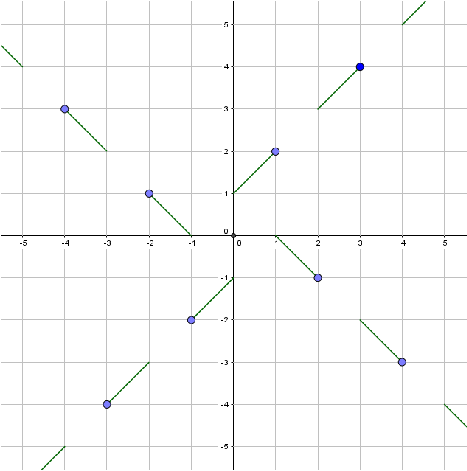

|
Solution: If a point (a,b) is on the graph, then by the symmetry required, three other points must also be on the graph: (b,-a), (-a,-b), and (-b,a). The origin (0,0) must be on the graph, and is the only point which is its own image about all rotations. No other point of the form (x,x) can be on the graph, otherwise (x,-x) is also on it, and the graph will fail to represent a function. We can begin by finding values for integers that will "fill up" the area near the origin. One possible way to do this is to include the set of points (1,2), (2,-1), (-1,-2), and (-2,1). After that, we can include (3,4), (4,-3), (-3,-4), (-4,3). We can continue indefinitely in this way and define the function for all integers, and then extend the definition to all real numbers. Here is one possible function: $$ f(x)=\begin{cases} 1+x \text{ if } x > 0 \text{ and } \lceil x \rceil \text{ is odd } \\ 1-x \text{ if } x > 0 \text{ and } \lceil x \rceil \text{ is even }\\ -1+x \text{ if } x < 0 \text{ and } \lfloor x \rfloor \text{ is odd }\\ -1-x \text{ if } x < 0 \text{ and } \lfloor x \rfloor \text{ is even }\\ 0 \text{ if } x=0 \\ \end{cases} $$ Below is a graph of this function.  |